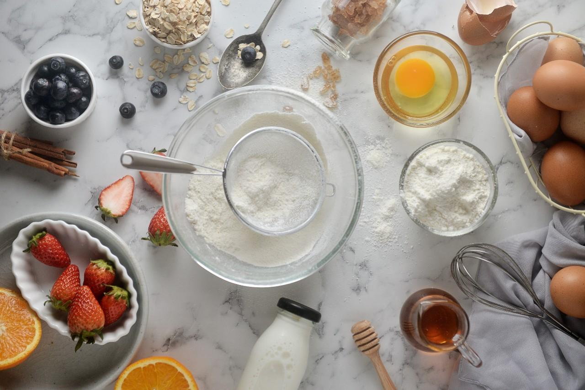
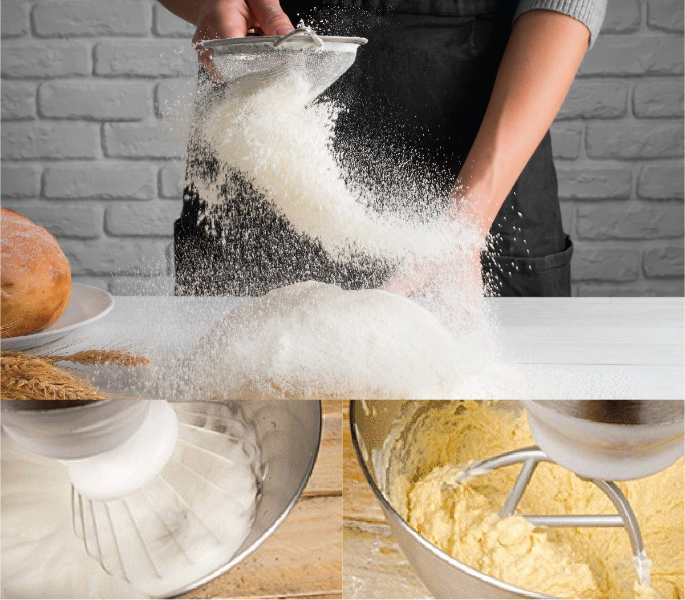
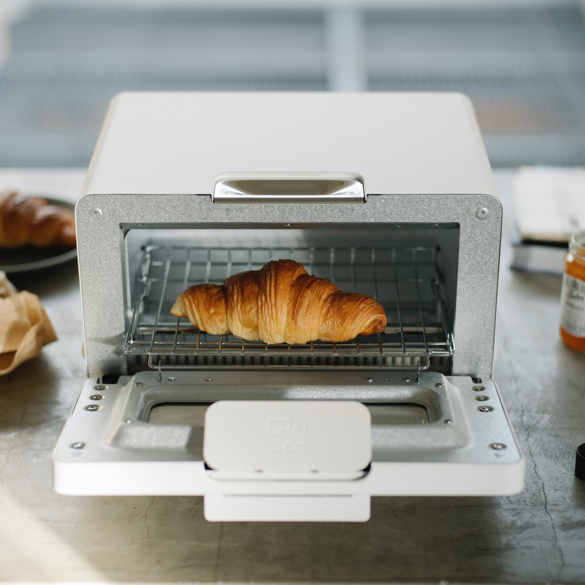

อธิบายขั้นตอนพื้นฐานในการทำขนมอย่างเป็นลำดับ ตั้งแต่การเตรียมวัตถุดิบจนถึงการตกแต่งก่อนเสิร์ฟ
ก่อนเริ่มทำขนม ควรตรวจสอบวัตถุดิบทั้งหมดให้ครบถ้วน เช่น แป้ง ไข่ นม น้ำตาล และเนย เพื่อป้องกันปัญหาการขาดวัตถุดิบ ซึ่งอาจทำให้ขนมไม่สำเร็จตามที่ตั้งใจไว้
การชั่งตวงวัตถุดิบตามสัดส่วนที่ถูกต้อง จะช่วยให้ขนมมีรสชาติและเนื้อสัมผัสที่เหมาะสม รวมถึงช่วยลดความผิดพลาดระหว่างการทำ
ควรเตรียมอุปกรณ์ให้พร้อม เช่น ชามผสม ตะกร้อ เครื่องชั่ง และเตาอบ เพื่อให้ขั้นตอนการทำเป็นไปอย่างราบรื่น
เริ่มจากการผสมวัตถุดิบแห้งก่อน จากนั้นจึงผสมวัตถุดิบของเหลวตามลำดับที่กำหนด เพื่อให้ส่วนผสมเข้ากันอย่างสม่ำเสมอ
ควรผสมอย่างเบามือ ไม่คนแรงเกินไป เพื่อป้องกันไม่ให้เนื้อขนมแข็งหรือแน่นเกินไป
เทส่วนผสมลงพิมพ์และนำเข้าเตาอบ โดยตั้งอุณหภูมิและเวลาตามที่เหมาะสม
ระหว่างอบควรหลีกเลี่ยงการเปิดเตาอบบ่อยครั้ง เพื่อให้อุณหภูมิคงที่
เมื่อขนมสุกแล้ว ควรพักไว้ให้เย็น เพื่อให้เนื้อขนมเซตตัวก่อนตกแต่ง
สามารถตกแต่งด้วยน้ำตาลไอซิ่ง ผลไม้ หรือซอสตามความเหมาะสม